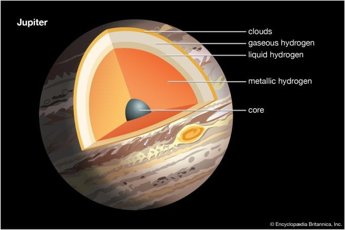
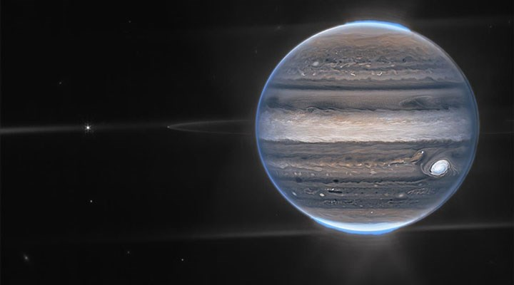

Hakkında
Jüpiter Güneş Sistemi'nde 5. sırada yer alır ve en büyük gezegendir. Jüpiteri'n kütlesi, Güneş Sistemi'ndeki diğer tüm gezegenlerin kütlesinin toplamından 2 kat büyüktür. Jüpiter'in dışarıdan bakıldığında görülen çizgileri ve kıvrımları; soğuk, rüzgarlı, amonyak ve su buharlarıyla kaplı, hidrojen ve helyumdan oluşan atmosferinde bulunur. Hepimizin fotoğraflarda gördüğü Jüpiter'deki "Büyük Kırmızı Nokta" olarak adlandırılan fırtına, Dünya'dan daha büyüktür.
Jüpiter'in etrafı 79 adet kendi uydusuyla çevrilidir. Bilim insanlarının ilgisini en çok Galileo Uyduları ile çekmektedir. Bu uydular ismini 1610 yılında Galileo Galilei tarafından keşfedildiği için almıştır. Galileo uyduları isimleri; IO, Europa, Ganymede ve Callisto'dir. Ayrıca Jüpiterin de halkaları vardır. Ancak Satürn'ün halkaları gibi buzdan değil tozdan oluşmakta ve daha soluktur. Bu yüzden görünmesi de bir o kadar zordur.

Boyutu ve uzaklığı
Jüpiter'in yarı çapı 69.911 km'dir. Dünyadan 11 kat daha geniştir. Örnek verecek olursak, eğer Dünya 10 kuruş büyüklüğünde bir madeni para olsaydı, Jüpiter onun yanında bir basketbol topu olurdu.
Jüpiterin Güneş'e olan uzaklığı 778 milyon kilometredir. Bu 5.2 au (astronomik mesafe) yapar. 1 astronomik mesafe Dünya ile Güneş arasındaki uzaklıktır. Güneşten çıkan ışınlar Jüpitere 43 dakika ulaşır. Yani o mesafe ışık hızıyla gidilecek olursa, yolculuk 43 dakika sürer.İskoçya'nın Edinburgh kentinde bulunan bir Jüpiter işareti. Jüpiter, Dünya'ya en yakın olduğu zaman 588 milyon kilometre, en uzak olduğu zaman 968 kilometre uzaktadır. Sanıyoruz işarette olabileceği en uzak mesafe, hata payıyla birlikte verilmektedir.

Yörünge ve Rotasyon
Jüpiter, Güneş Sistemi içerisinde en kısa gün uzunluğuna sahip gezegendir. Jüpiter için bir gün 10 saat sürer. Bu Jüpiter'in kendi etrafında bir tur atması için gereken süredir. Jüpiter'in Güneş etrafında 1 tam tur atması için gereken süre ise 12 Dünya yılıdır (ya da 4333 Dünya günü).
Jüpiter Güneş etrafında dönerken yalnızca 3 derecelik bir eğim yapar. Bu demek oluyor ki, Jüpiter diğer gezegenlerdeki gibi çeşitli mevsimler yoktur. Dünya'da ise bu eğim 23.5 derecedir ve mevsimleri oluşturan faktör budur.
Jüpiter öylesine büyüktür ki, gezegenin yörüngesinin merkezi diğer gezegenlerinki gibi Güneş'in yarıçapı boyunca bir noktada değil, Güneş'in yarıçapının 1.07 katı uzakta bir noktadadır.Daha önce bahsettiğimiz üzere Jüpiterin yapısı bir yıldız yapısına benzer. Bu yüzden Jüpiter'in çoğunlukla hidrojen ve helyum yapısı Güneş'e de benzer. Atmosferin derinliklerinde, basınç ve sıcaklık artar. Bu basınç artışı sebebiyle hidrojen bir sıvıya sıkıştırılır. Bu Jüpiter'in güneş sistemindeki en büyük okyanusa sahip olmasını sağlar. Ancak bu okyanus su ile değil, hidrojen ile doludur. Bilim insanları gezegenin derinliklerinde basıncın büyüklüğünden kaynaklı olarak, hidrojen atomlarının elektronları sıkılarak oluşan elektron dolu sıvının bir metal gibi iletken olabileceğini düşünüyorlar. Jüpiter'in hızlı dönüş hızı, bu bölgedeki elektrik akımlarını sürdürdüğü ve gezegenin güçlü bir manyetik alanını oluşturduğu düşünülmektedir. Jüpiter'in tamamen katı ya da kalın, sıcak ve yoğun bir çorba kıvamında bir merkeze sahip olup olmadığı henüz bilinmiyor. Merkezin çoğunlukla demir ve silikat minerallerinden oluşan 50.000 derece Santigrat olabilceği düşünülüyor.